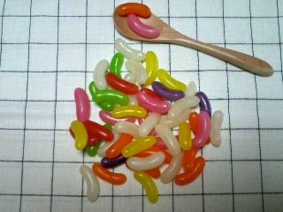

HTMLについて
HTML（エイチティーエムエル、HyperText Markup Language）は、ウェブページを作成するために開発された言語。 現在、インターネット上で公開されてるウェブページのほとんどは、HTMLで作成されています。
コンピュータがその文書の構造を理解することで、検索エンジンがウェブページの構造を把握して解析したり、ブラウザがウェブページ内の各要素の意味を理解して閲覧しやすいように表示することなどが可能になる
CSSについて
 CSS（Cascading Style Sheets、カスケーディング・スタイル・シート）とは、ウェブページのスタイルを指定するための言語です。 ワープロソフトなどで作成される文書も含めて、文書のスタイルを指定する技術全般をスタイルシートといいます。HTMLやXHTMLなどで作成されるウェブページにスタイルを適用する場合には、スタイルシート言語の1つであるCSSが一般的に利用されています。